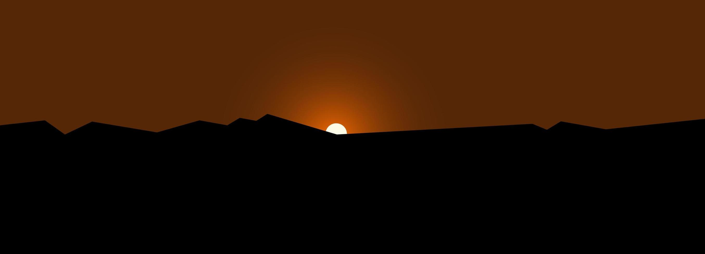
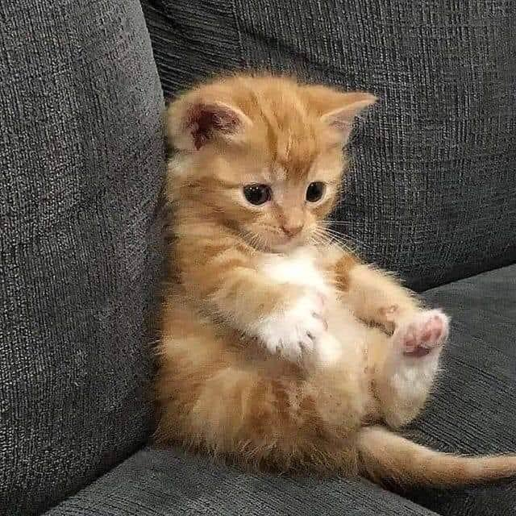
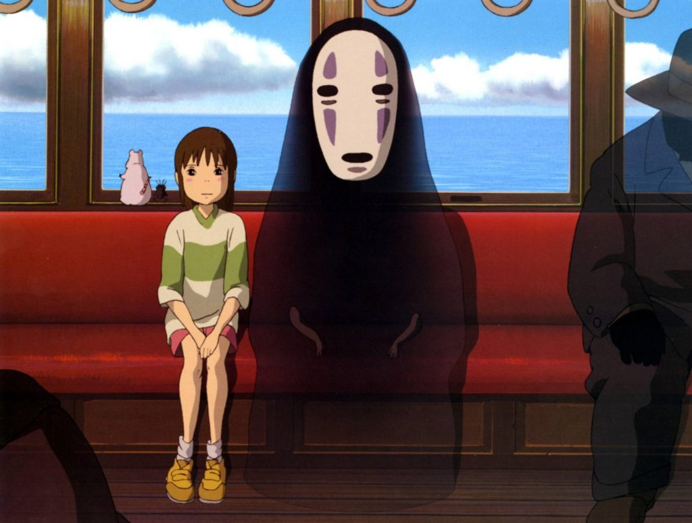

.
Sobre Mi
Mi nombre es Priscila, soy de Villa Carlos Paz,
provincia de Córdoba en Argentina.
En este momento estoy diseñando mi primer página web.
Me encantaría convertirme en una programadora que pueda
realizar trabajo remoto.
Saludos a todos!!!

Mis cosas Fav

Los Gatitos
Me encantan los gatitos, de hecho tengo 2 de mascota.
Sus nombres son Akane y Saiki, y nunca me aburro con ellos.
Siempre hacen alguna travesura.

El Anime
Desde chiquita siempre me gustó el anime, tanto series como películas.
He visto un montón. El género que más me gusta es el de misterio.
En la imagén, se ve una escena clásica de la película "El viaje De Chihiro"
un largometraje del afamado Estudio Ghibli.